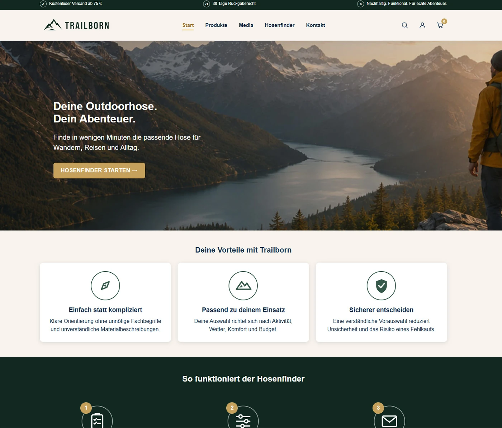
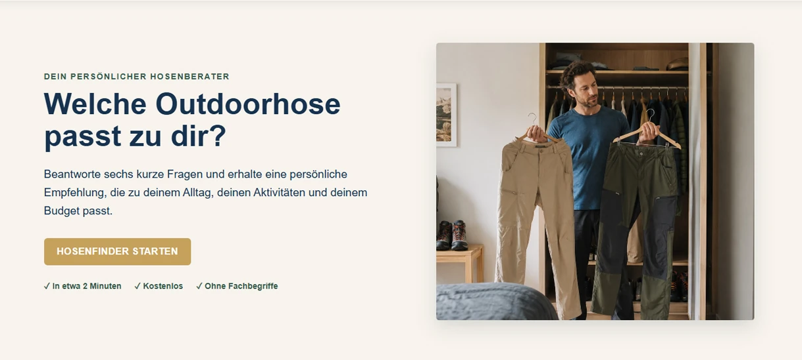
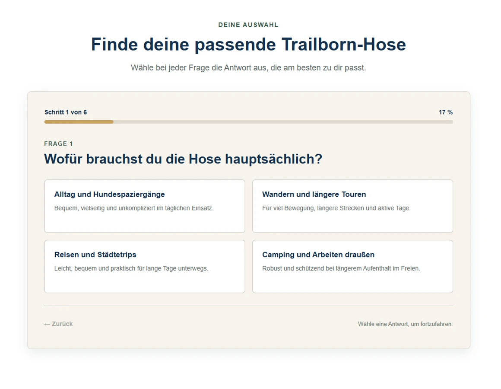
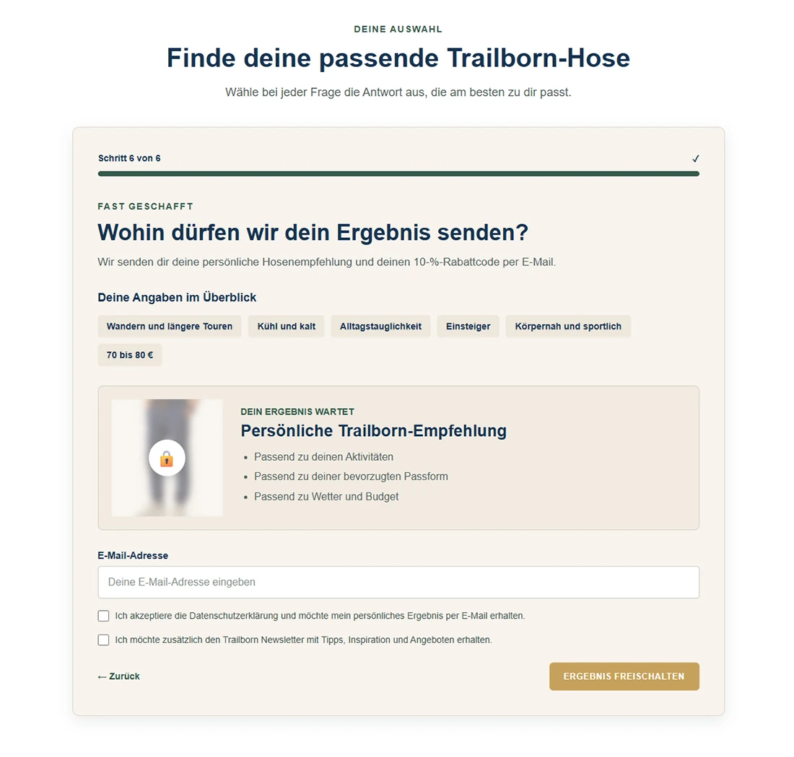
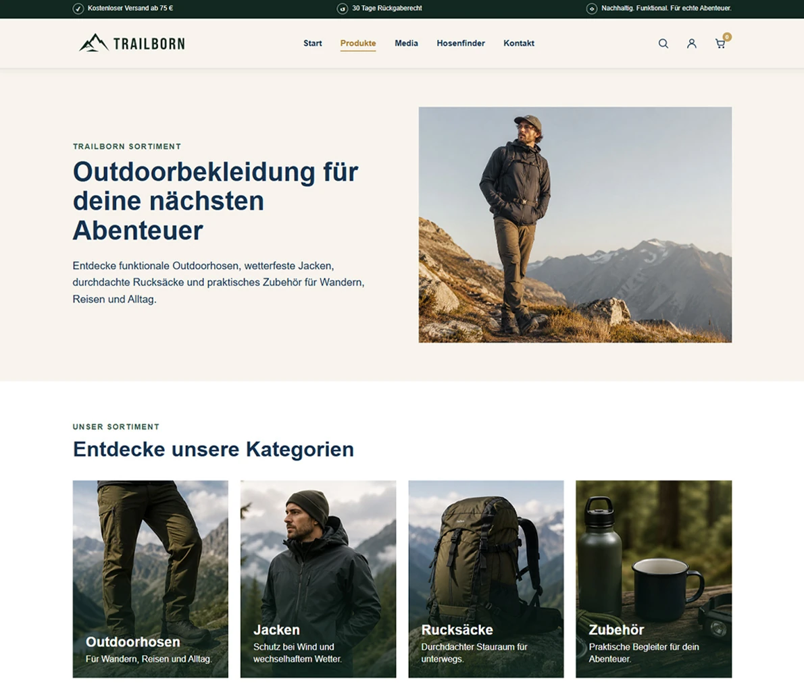

Uncertainty around selection, fit, use case and price.
← All projects
Case Study · Training Project · Fictional Brand · AI-assisted visuals
From product uncertainty to a qualified lead.
Concept and implementation of an interactive product advisor that helps users choose a suitable pair of outdoor trousers while also capturing relevant information for follow-up marketing communication.
Project
Outdoor Trouser Finder

Strategy
Lead Magnet & Nurturing
Design
UX & Web Design
Technology
HTML · CSS · JavaScript
My role
Concept to Frontend
01
Initial situation
Too many options. Too little guidance.
People new to outdoor gear often find it difficult to compare products based on materials, fit and technical features.
At the same time, a conventional product page learns very little about what an anonymous visitor actually needs.
Anonymous visitors provide little actionable information about needs and purchase intent.
Combine product guidance and lead generation in one process.
02 · Strategic idea
The real lead magnet is not the discount. It is the product guidance.
The finder was not designed as a classic giveaway or discount form. The real value for the user is a quick, clear product recommendation.
This gives the user concrete value first. Contact details are requested only once the personal selection is ready.
Principle
Help first. Convert second.
01
Entry
Low barrier, clear promise.

02
Qualification
Six questions narrow down the right options.

03
Conversion
The value is visible before contact details are requested.

04 · Qualification logic
Every question has a clear purpose.
The answers drive the product recommendation while also providing information about the user’s requirements and preferences.
Activity
Use context
Everyday use, hiking, travel or longer outdoor activities
Weather
Functional requirements
Temperature and expected weather conditions
Priority
Purchase criterion
Which product feature matters most to the user
Experience
Level of guidance
From beginner level to frequent use
Fit
Product preference
Personal preference for cut and feel
Budget
Price range
Realistic range for the recommendation
Visitor
→
Need
→
Contact
→
qualified lead
05 · Nurturing concept
After the recommendation, the nurturing sequence begins.
For the follow-up process, I developed a three-stage email sequence. It supports the purchase decision with a product recommendation, additional information and personal guidance.
Day 0
Conversion
Deliver the personal recommendation.
The first email delivers the individual product recommendation, explains the selection and adds a welcome discount.
Day 3
Consideration
Make product benefits clear.
The second email explains materials and functional benefits in a practical way and addresses common questions before purchase.
Day 7
Trust
Strengthen trust in the brand and the personal recommendation.
The third contact uses community, relatable experiences and personal support instead of increasing sales pressure.
Concept scope
The email sequence, CRM handover and automation were designed as a lead-management process. The emails shown are campaign mockups, not screenshots of a live automation.
06 · Design & Frontend
The concept became a functional prototype.
Based on the marketing and UX concept, I designed the website and built it as a functional frontend prototype using HTML, CSS and JavaScript. It includes the brand identity, product sections and interactive trouser finder.

Web Design & Frontend
Product range page for the fictional outdoor brand, shown as part of the complete website prototype.
Structure
Semantic page structure, questions, forms and result areas.
Interface
Brand identity, layout system, interaction states and visual guidance.
Interaction
Question flow, progress, scoring and dynamic product recommendation.
My contribution
Lead Magnet Concept
Customer Journey
Qualification Logic
UX Concept
Web Design
HTML & CSS
JavaScript Logic
Email Nurturing